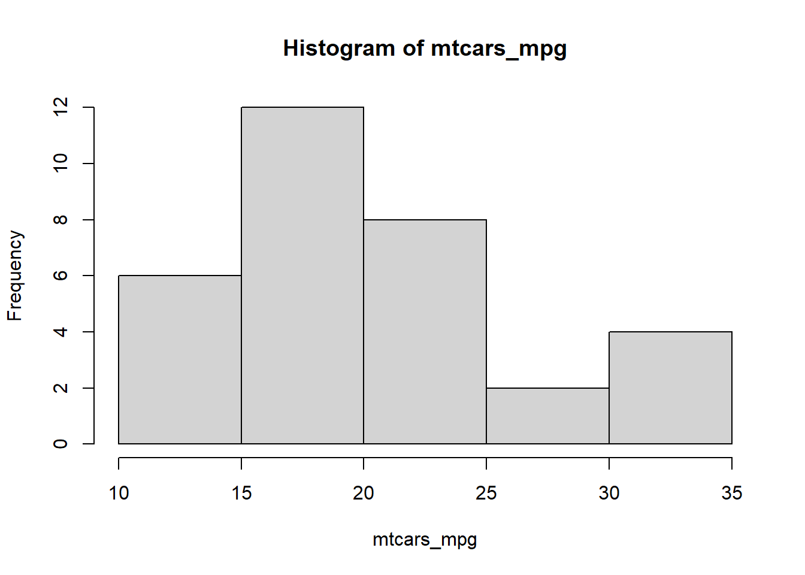
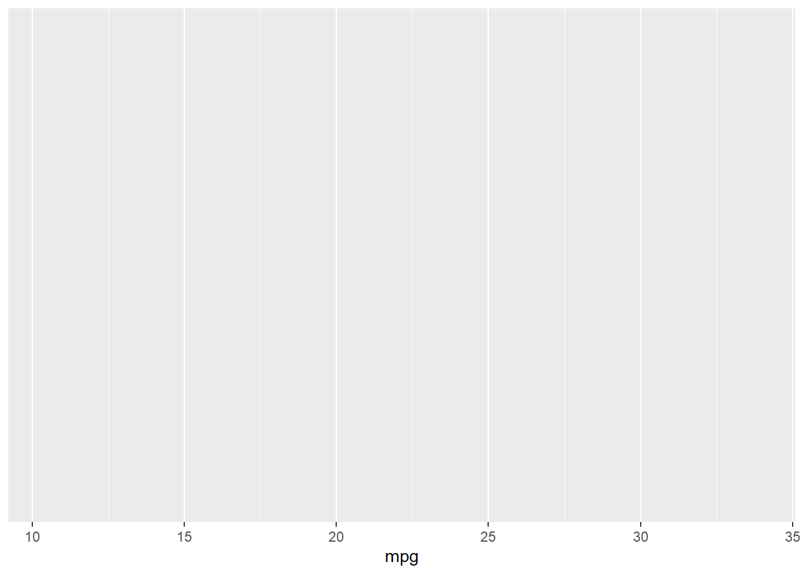
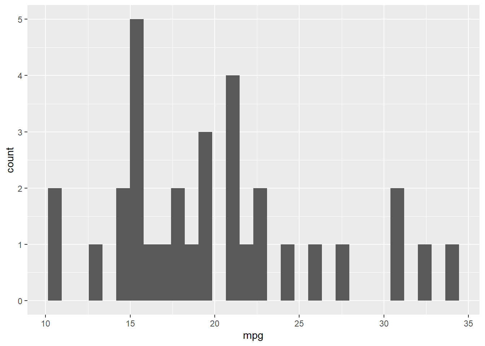
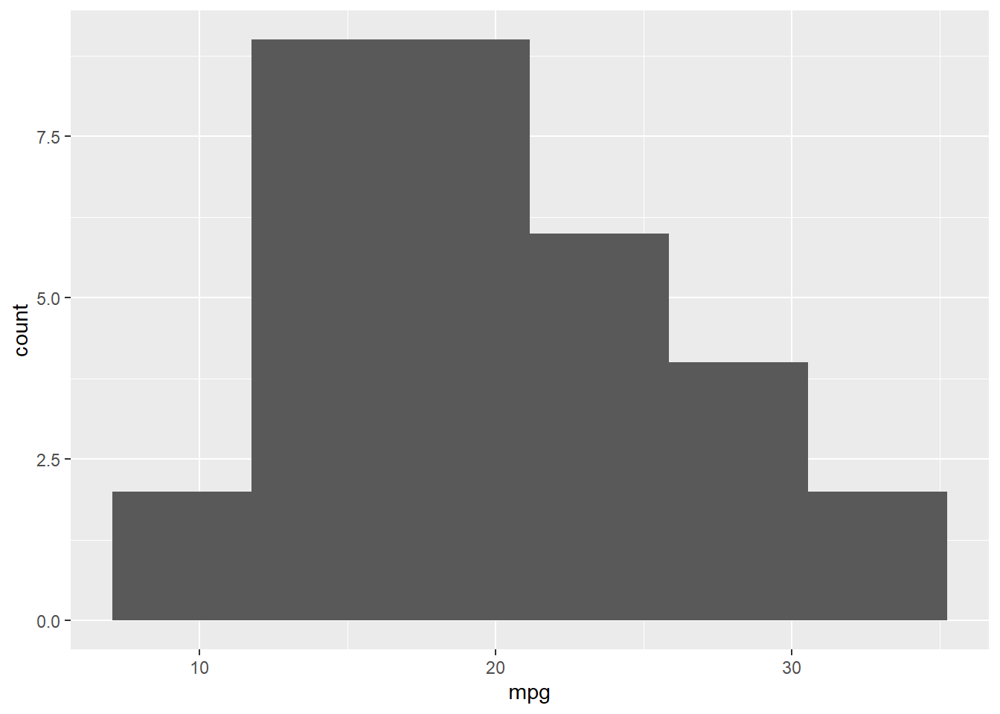
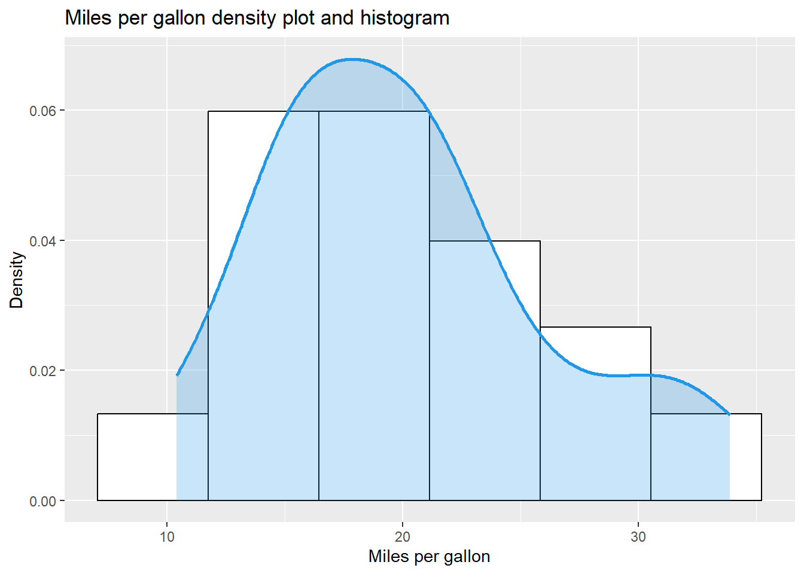
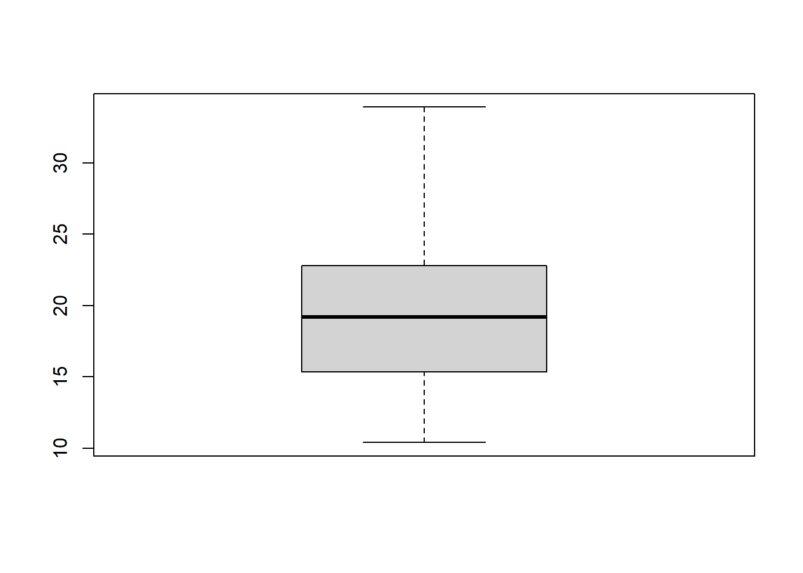
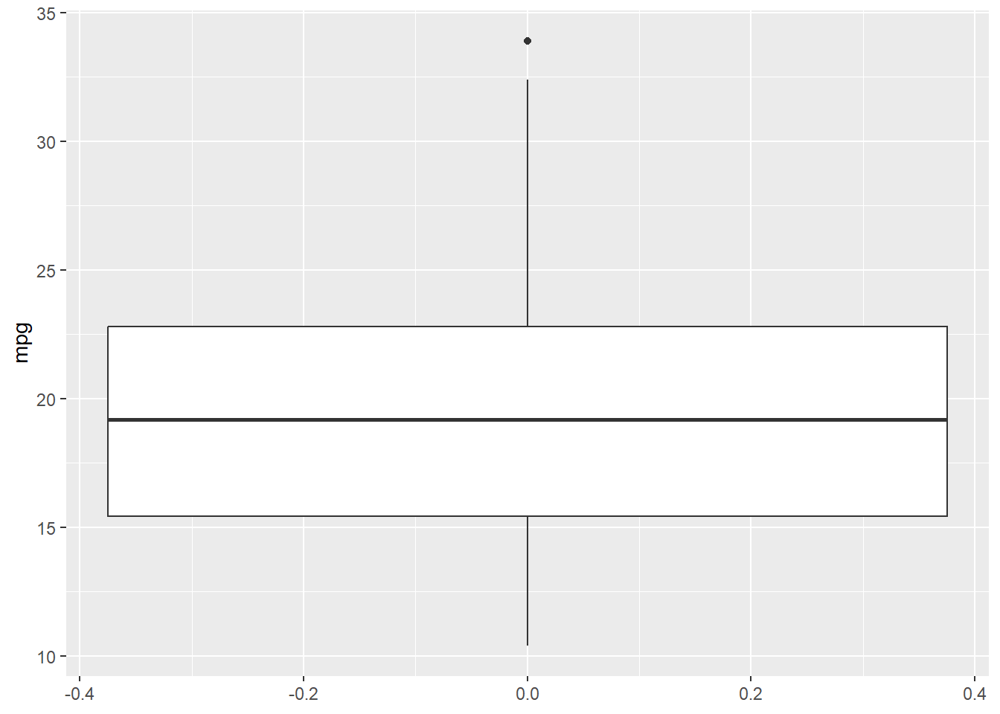

In this small document we will practice basic statistics. We will explore the dataset mtcars, which is included in the basic R installation.
Libraries and Data
We will begin by loading the libraries we will use. Instead of loading our libraries one at a time, we can just load tidyverse, which includes all the tools that we’ll need
library(summarytools)library(tidyverse)
── Attaching core tidyverse packages ──────────────────────── tidyverse 2.0.0 ──
✔ dplyr 1.1.4 ✔ readr 2.1.5
✔ forcats 1.0.0 ✔ stringr 1.5.1
✔ ggplot2 3.5.2 ✔ tibble 3.3.0
✔ lubridate 1.9.4 ✔ tidyr 1.3.1
✔ purrr 1.1.0
── Conflicts ────────────────────────────────────────── tidyverse_conflicts() ──
✖ dplyr::filter() masks stats::filter()
✖ dplyr::lag() masks stats::lag()
✖ tibble::view() masks summarytools::view()
ℹ Use the conflicted package (<http://conflicted.r-lib.org/>) to force all conflicts to become errors
Now, we load our dataset
attach(mtcars)
The following object is masked from package:ggplot2:
mpg
Exploring the dataset
We can explore the contents of the dataset just by typing in its name
The dataset consists of 11 variables for 32 records. Let’s explore the variable mpg by first creating a new variable:
mtcars_mpg <- mtcars$mpg
Descriptive statistics
Minimum and maximum
Minimum and maximum can be found thanks to the min() and max() functions:
min(mtcars_mpg)
[1] 10.4
max(mtcars_mpg)
[1] 33.9
Alternatively the range() function gives you the minimum and maximum directly:
rng <-range(mtcars_mpg)rng
[1] 10.4 33.9
Note that the output of the range() function is actually an object containing the minimum and maximum (in that order). This means you can actually access the minimum with
rng[1]
[1] 10.4
rng[2]
[1] 33.9
This reminds us that, in R, there are often several ways to arrive at the same result. The method that uses the shortest piece of code is usually preferred as a shorter piece of code is less prone to coding errors and more readable.
Measures of central tendency
Mean
The mean can be computed with the mean() function
mean(mtcars_mpg)
[1] 20.09062
Tips:
if there is at least one missing value in your dataset, use mean(data, na.rm = TRUE) to compute the mean with the NA excluded. This argument can be used for many other functions, not only the mean
for a truncated mean, use mean(data, trim = 0.10) and change the trim argument to your needs
Median
The median can be computed thanks to the median() function:
median(mtcars_mpg)
[1] 19.2
or with the quantile() function:
quantile(mtcars_mpg, 0.5)
50%
19.2
since the quantile of order 0.5 corresponds to the median.
Quantiles
Remember that the \(q\) quantile, with \(0\le q\le 1\), corresponds to the data point below which we have a fraction \(q\) of the data points when sorted in ascending order. So, for instance, the median corresponds to the \(0.5\) quantile because 50% of the sorted data is below it.
Other important quantiles are the 0.25 and 0.75 quantiles, also called the 1st and the 3rd quartiles. They can be obtained using the quantile() function
quantile(mtcars_mpg, 0.25) # first quartile
25%
15.425
quantile(mtcars_mpg, 0.75) # third quartile
75%
22.8
Mode
The mode is the value that has highest number of occurrences in a set of data. Unike mean and median, mode can have both numeric and character data.
R does not have a standard in-built function to calculate mode. So we create a user function to calculate mode of a data set in R. This function takes the vector as input and gives the mode value as output.
The range of the data can be easily computed by subtracting the minimum from the maximum
rng[2]-rng[1]
[1] 23.5
Interquartile range
The interquartile range (i.e., the difference between the first and third quartiles) can be computed with the IQR() function
IQR(mtcars_mpg)
[1] 7.375
Standard deviation and variance
The standard deviation and the variance are computed with the sd() and var() functions, respectively. These functions correspond to the sample standard deviation and variance, since R assumes that the data corresponds to a sample of the population.
sd(mtcars_mpg)
[1] 6.026948
var(mtcars_mpg)
[1] 36.3241
It is easy to see that the variance is the square of the standar deviation, as it should be.
var(mtcars_mpg) == (sd(mtcars_mpg))^2
[1] TRUE
Descriptive statistics of several variables at a time
We can use the lapply() function to calculate a statistic of several variables at a time. For instance, if we wanted to find the mean of all numerical variables in our data set, we would type
Better yet, in basic R we can use summary() to display all relevant statistics of all numerical values in the dataset.
summary(mtcars)
mpg cyl disp hp
Min. :10.40 Min. :4.000 Min. : 71.1 Min. : 52.0
1st Qu.:15.43 1st Qu.:4.000 1st Qu.:120.8 1st Qu.: 96.5
Median :19.20 Median :6.000 Median :196.3 Median :123.0
Mean :20.09 Mean :6.188 Mean :230.7 Mean :146.7
3rd Qu.:22.80 3rd Qu.:8.000 3rd Qu.:326.0 3rd Qu.:180.0
Max. :33.90 Max. :8.000 Max. :472.0 Max. :335.0
drat wt qsec vs
Min. :2.760 Min. :1.513 Min. :14.50 Min. :0.0000
1st Qu.:3.080 1st Qu.:2.581 1st Qu.:16.89 1st Qu.:0.0000
Median :3.695 Median :3.325 Median :17.71 Median :0.0000
Mean :3.597 Mean :3.217 Mean :17.85 Mean :0.4375
3rd Qu.:3.920 3rd Qu.:3.610 3rd Qu.:18.90 3rd Qu.:1.0000
Max. :4.930 Max. :5.424 Max. :22.90 Max. :1.0000
am gear carb
Min. :0.0000 Min. :3.000 Min. :1.000
1st Qu.:0.0000 1st Qu.:3.000 1st Qu.:2.000
Median :0.0000 Median :4.000 Median :2.000
Mean :0.4062 Mean :3.688 Mean :2.812
3rd Qu.:1.0000 3rd Qu.:4.000 3rd Qu.:4.000
Max. :1.0000 Max. :5.000 Max. :8.000
And even better with the descr() function from the summarytools package:
Now that we have a numerical description of our dataset, we can proceed to visualize this information. We will show how to get histograms, boxplots, and other visualizations.
Histogram
A histogram gives an idea about the distribution of a quantitative variable. The idea is to break the range of values into intervals and count how many observations fall into each interval. Histograms are a bit similar to barplots, but histograms are used for quantitative variables whereas barplots are used for qualitative variables. To draw a histogram in R, use hist():
hist(mtcars_mpg)
Add the arguments breaks = inside the hist() function if you want to change the number of bins. A rule of thumb (known as Sturges’ law) is that the number of bins should be the rounded value of the square root of the number of observations. The dataset includes 32 observations so in this case the number of bins can be set to 6.
hist(mtcars_mpg, breaks=6)

We can also use the ggplot2 library, which is loaded by tidyverse , to get a more customizable and visually appealing histogram. A ggplot visualization is constructed in steps, using a specialized grammar: we need the data, an aesthetics mapping, and a geometry option, plus other customization options, in order to construct the graph. The use of this grammar of graphics allows us to construct different visualizations for the same dataset just by changing one or more aspects of the graph.
For starters, we create a generic visualization for the dataset mtcars :
cars_graph <-ggplot(mtcars)
Next, we add an aesthetics mapping for the mpg variable:
cars_graph +aes(mpg)

We get an empty canvas over which we can put any geometry we desire. Even though we can add an aesthetics mapping after creating the ggplot object, it is customary to create the object and the aesthetics mapping together, and then add a geometry and other option.
cars_graph <-ggplot(mtcars, aes(mpg))
For a basic histogram, we use geom_histogram() .
cars_graph +geom_histogram()
`stat_bin()` using `bins = 30`. Pick better value with `binwidth`.

By default, the number of bins is 30. You can change this value with geom_histogram(bins = 6) for instance.
cars_graph +geom_histogram(bins =6)

We can draw the distribution shape on top of the histogram, plus some options to beautify the plot.
cars_graph +geom_histogram(aes(y=after_stat(density)),bins =6,color =1, fill ="white") +geom_density(alpha =0.25,lwd =1, colour =4,fill =4) +labs(title ="Miles per gallon density plot and histogram",x ="Miles per gallon",y ="Density")

Boxplots
Boxplots are really useful in descriptive statistics and are often underused (mostly because it is not well understood by the public). A boxplot graphically represents the distribution of a quantitative variable by visually displaying five common location summary (minimum, median, first/third quartiles and maximum) and any observation that was classified as a suspected outlier using the interquartile range (IQR) criterion.
The IQR criterion means that all observations above \(q_{0.75}+1.5\cdot IQR\) or below \(q_{0.25}-1.5\cdot IQR\) (where \(q_{0.25}\) and \(q_{0.75}\) correspond to first and third quartile respectively) are considered as potential outliers by R. The minimum and maximum in the boxplot are represented without these suspected outliers.
Seeing all these information on the same plot help to have a good first overview of the dispersion and the location of the data. Before drawing a boxplot of our data, see below a graph explaining the information present on a boxplot:
How to interpret a boxplot? Source: LFSAB1105
Now, an example with our data set, in basic R:
boxplot(mtcars_mpg)

Same example with ggplot :
mtcars |>ggplot(aes(y = mpg)) +geom_boxplot()

Note that we omitted the first argument in ggplot given that we are using a pipe, |>. Using pipes is very handy, since it’s easier to see the flow of the computations this way. We will explain pipes and their use later in the course.